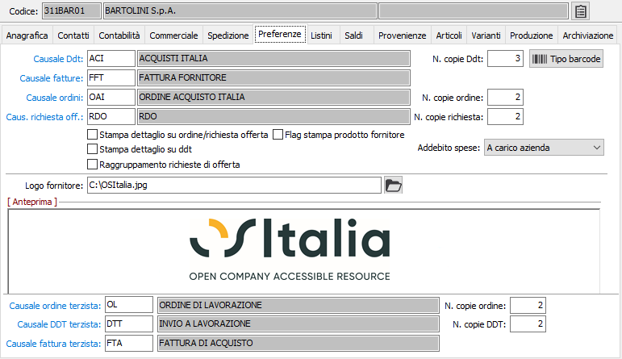
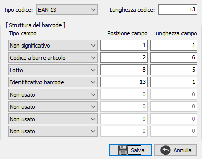

Preferenze
La linguetta contiene informazioni attinenti alle tipologie di documenti abitualmente utilizzati nei confronti del fornitore, che vengono proposte automaticamente al momento dell’emissione degli ordini di acquisto, dell’acquisizione di DDT o di fatture passive. La compilazione della sezione può pertanto essere omessa dagli utenti che non utilizzano i relativi programmi.

CAUSALE DDT: inserire il codice della causale Ddt abituale del fornitore. Viene proposta in fase di acquisizione Ddt di acquisto. Su questo campo è attiva la ricerca (F9) sulla tabella causali Ddt.
NUMERO COPIE DDT: inserire il numero di copie di DDT che si devono stampare per il fornitore.
CAUSALE FATTURE: inserire il codice della causale fatture preferenziale del fornitore. Viene proposta in fase di acquisizione fatture. Su questo campo è attiva la ricerca (F9) sulla causali fatture.
CAUSALE ORDINE: inserire il codice della causale ordini preferenziale del fornitore. Viene proposta in fase di emissione ordini. Su questo campo è attiva la ricerca (F9) sulla tabella causali ordini.
NUMERO COPIE ORDINE: inserire il numero di copie di ordine che si devono stampare per il fornitore.
CAUSALE RICHIESTA OFF.: inserire il codice della causale richiesta di offerta del fornitore. Viene proposta in fase di emissione documenti. Su questo campo è attiva la ricerca (F9) sulla tabella causali richieste di offerta.
NUMERO COPIE RICHIESTA: inserire il numero di copie di richieste di offerta che si devono stampare per il fornitore.
STAMPA DETTAGLIO SU ORDINE/RICHIESTA OFFERTA: check box. Se contiene la spunta, indica se sulla stampa degli ordini e delle richieste di offerte fornitori si desidera la stampa del dettaglio delle quantità.
STAMPA DETTAGLIO SU DDT: check box. Se contiene la spunta, indica se sulla stampa dei Ddt fornitori, quelli emessi dalle vendite, si desidera la stampa del dettaglio delle quantità.
RAGGRUPPAMENTO RICHIESTE DI OFFERTA: Definisce se in fase di generazione ordini fornitori da richieste di offerte deve essere effettuato il raggruppamento delle richieste per il fornitore (casella con segno di spunta) oppure per ogni richiesta deve essere generato un ordine fornitore (casella vuota).
FLAG STAMPA PRODOTTO FORNITORE: se presente la spunta e se presenti le descrizioni speciali degli articoli, il flag determina la stampa, sui documenti intestati al fornitore attivo, di codice articolo e descrizione prodotto del fornitore anzichè dei normali codice articolo e descrizione prodotto.
ADDEBITO SPESE: viene proposta in fase di elaborazione pagamenti. Nel caso di spese “A carico azienda” oppure “Ciascuno per la propria parte” vengono calcolate le spese in base alla tabella condizioni; nel caso di spese “A carico fornitore” non viene addebitato nessun onere (l’importo addebitato è uguale al pagato al fornitore). Tale informazione viene anche riportata nel flusso bonifici estero.
LOGO FORNITORE: consente di acquisire, indicandone il percorso, l’immagine del logo che viene stampata sulle autofatture.
CAUSALE ORDINE TERZISTA: inserire il codice della causale ordini terzista preferenziale del fornitore. Viene proposta in fase di emissione ordini del modulo conto lavoro. Su questo campo è attiva la ricerca (F9) sulla tabella causali ordini terzisti.
NUMERO COPIE ORDINE: inserire il numero di copie di ordine terzista che si devono stampare per il fornitore.
CAUSALE DDT TERZISTA: inserire il codice della causale Ddt terzista abituale del fornitore. Viene proposta in fase di inserimento Ddt del modulo conto lavoro. Su questo campo è attiva la ricerca (F9) sulla tabella causali Ddt terzisti.
NUMERO COPIE DDT: inserire il numero di copie di DDT terzista che si devono stampare per il fornitore.
CAUSALE FATTURA TERZISTA: inserire il codice della causale fattura terzista abituale del fornitore. Viene proposta in fase di inserimento fatture del modulo conto lavoro. Su questo campo è attiva la ricerca (F9) sulla tabella causali fatture terzisti.

Se è attiva la gestione dei tipi barcode è presente il bottone Tipo Barcode, che permette di codificare un tipo barcode specifico per il fornitore. Nel caso in cui sul fornitore sia configurato il tipo barcode non vengono utilizzati i tipi barcode standard per la trascodifica dei codici; se è presente un tipo barcode per il fornitore il bottone ha la scritta evidenziata in blu. Il caricamento del tipo barcode del fornitore ha lo stesso funzionamento dei tipi barcode standard.